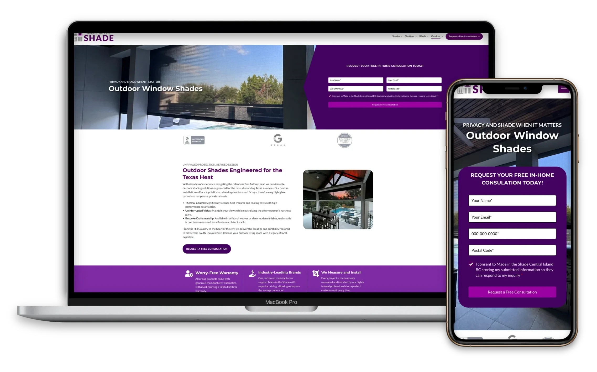

Performance & Local SEO Overhaul
Made in the Shade
San Antonio, TX | April 2026
Rebuilt a mobile-first, conversion-focused service page using WPBakery, crafted to capture local San Antonio homeowners.
- The hero features immediate form visibility and a trust bar to engage prospective clients, plus a click-to-call feature in the top navigation menu. The content has been overhauled with intentional, SEO-focused copy around South Texas heat, energy efficiency, and real cost savings. Included is a personal intro spotlighting the owners’ decades of hands-on industry experience to bolster client trust and transparency.
- Converted high-resolution imagery to compressed next-gen WebP formats, eliminated layout shifts (CLS), and configured WP Rocket with custom JavaScript delay execution.
- Authored and validated custom JSON-LD Structured Data (LocalBusiness, ratings, and FAQ rich snippets) to strengthen Local Map Pack visibility.
WordPress
WPBakery
WP Rocket
WebP Optimization
JSON-LD Schema
Core Web Vitals

Desktop PageSpeed
96/100
vs. 43/100
Primary Local Competitor
Mobile PageSpeed
84/100
vs. 37/100
Primary Local Competitor
Stability & Render
0 Errors
Instant Paint
Competitor timed out in tests